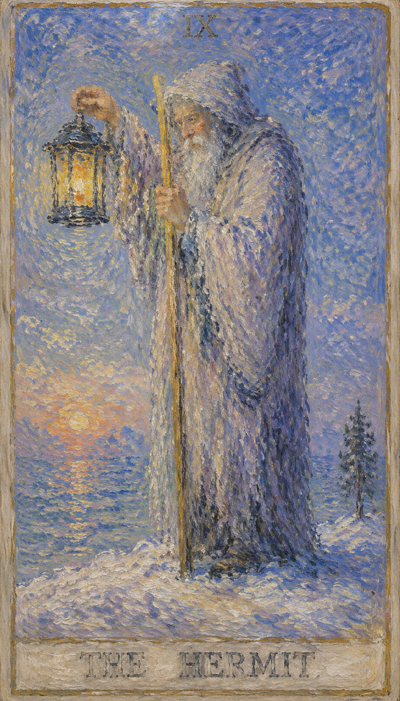
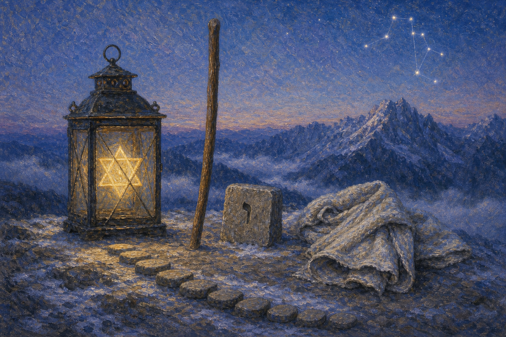
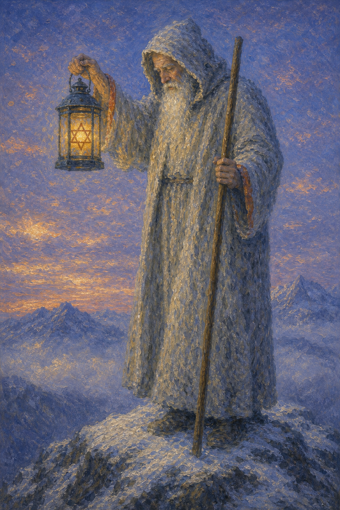
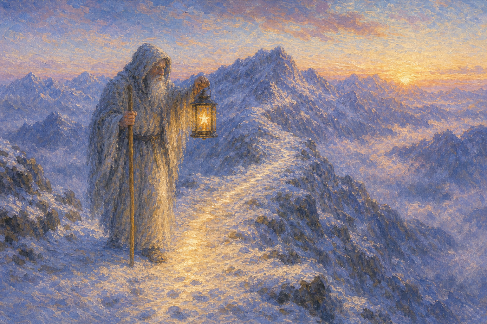
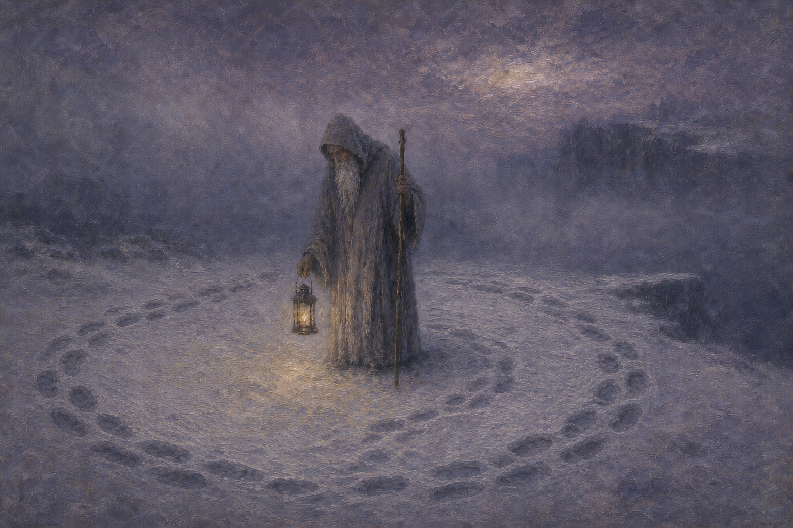
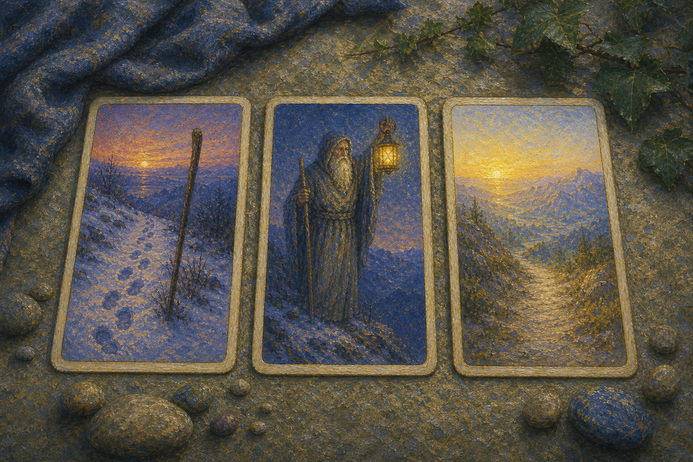

克洛诺斯 · Chronos
隐士从多重层面与时间相关。克洛诺斯吞下每一个新生的孩子，神话式地说明所有生命都必须屈从于时光；后来他被儿子宙斯推翻并放逐。隐士因此不只是年长的智者，也是时间沉淀、经验收束与退出旧秩序的象征。

隐士是一盏向内照的灯。他离开喧嚣，走向雪山深处，在孤独中保存判断，在沉默中寻找真理。灯笼里的六角星把这张牌同时指向两个方向：向内唤醒无意识，向外照亮脚边真实可见的一步。
当隐士出现，你正面对独处、内省、智慧与精神指引的课题。灯火不会一次照亮远方，却足以让判断在安静中成熟。
年长隐士身披灰白斗篷，立于雪地覆盖的山巅。他低头沉思，一手高举象征真理的灯笼，灯中闪烁着所罗门封印般的六角星；另一手执杖，把身体稳稳支撑在黑色岩地上。荒凉夜色中的光并不强烈，却恰好照亮脚边，提醒人既要追寻远方，也要承认眼前的真相。
他手中的拐杖，既是愚人出于本能挥舞的木棒，也是魔法师联系天地的法杖、战车手追求胜利的长矛。历经无知、热情与繁华之后，这根杖褪去炫目的力量，成为有意识的支柱——正如“返璞归真”所言，真正的教法不替人走路，只帮助人开启内在觉知。
隐士位于女祭司的正下方，与她的抽离原则相呼应。若想在自己身上下功夫，就必须暂时把注意力从外部世界撤回，走入内心并询问：“我究竟想要什么？”这种撤离未必是身体上的退隐，重要的是内在注意力的移转。
成为隐士之前，人一定曾经入世。正位把过往经验收束为智慧；逆位则警告人被旧伤塑形，逐渐成为自己曾经抗拒的样子。灯火所承诺的不是一条绝对正确的路，而是足够走好下一步的清醒。
灯光不必照亮远方；它只需把下一步，从黑暗中交还给你。
隐士从多重层面与时间相关。克洛诺斯吞下每一个新生的孩子，神话式地说明所有生命都必须屈从于时光；后来他被儿子宙斯推翻并放逐。隐士因此不只是年长的智者，也是时间沉淀、经验收束与退出旧秩序的象征。
庄子的超脱、姜子牙的待时而出、诸葛亮的躬耕南阳与陶渊明的归隐田园，共同构成“功成身退、独善其身”的文化原型。
中国隐士常抚琴、垂钓、采菊或观云，强调顺应自然、天人合一与无为守静；与塔罗隐士主动持灯求索的姿态相映成趣。
希伯来字母 Yod 意为“手”，形体微小，却被视为一切字母的种子。它对应隐士手中有限而真实的灯火：不提供宏大的全景，只把可被握持、可被实践的智慧交给求索者。
愚人凭本能挥舞木棒，魔法师借法杖导引天地，隐士则把同一根杖化为经过选择的支撑。力量没有消失，而是从展示转为自觉。
隐士延续女祭司的抽离，却不再把直觉封存在神殿里；他也继承力量牌对本能的驯服，把刻意的心智努力变成一盏可以携带的灯。


年长隐士立于雪山，手持灯与杖，灯中星光象征内在真理。
表现当事人面对课题时的心理位置。
提示事件发生的精神气候与现实压力。
象征这张牌运作能量的工具或门槛。
显示意识清晰度、希望或阴影。
对应此阶段在人生旅程中的功课。
代表智慧、慎思与内省。
代表中立、智慧与知识。
象征放弃物质享受，转向内在生活。
老人手中的灯笼代表内在的光，或对真理的探求。
灯笼里的星形为所罗门之星，代表智慧、真理与灵性的完美平衡。
象征支持与力量，也象征老人对自己道路的信念。
代表挑战、艰难的征途以及对更高意识的追求。
代表内心的平静与精神的稳定。
象征不确定性与转变的时刻。
象征智慧与年长。
表示现实与坚实的基础。
表现冷静稳重，可能表明冥想或深思。
橙色是行动与信任的颜色，象征隐士的自信与他对道路的笃定。
数字 9 是个位数的最后一个整数，象征完成、实现与下一轮开始前的沉淀。它也是 3 的平方，因此承载着精神层面的完成：把分散的经验收束成智慧，把向外追逐的能量转为向内观看。
9 数的人往往敏感、直觉强、想象力丰富，重视精神交流与自然生活，也需要保留自己的世界。其优势是学习、理解与研究能力；阴影则是容易停留在空想，或用“不在乎”回避实际选择。
在金钱与事业上，9 指向宗教修行、技术研究、学术探索与照顾他人的工作；在感情中，它重视精神共鸣，同时要求双方尊重距离与边界。
九号课题：在独处中保持清醒，在想象之后采取行动，并把个人智慧重新带回人群。
成为隐士之前，人一定曾经入世。正位表示对过往经历的反思使优秀品质得到提升；逆位则提示旧伤、封闭与过度退缩正在塑造现在的你。两者的分界，不在于“是否独处”，而在于独处究竟让判断更清晰，还是让人与现实失去联系。

正位的隐士表示你需要一段安静的时间。你正在寻求内在的智慧与生命的真谛，愿意独自沉思，追求精神满足和内心平静。研究、反省与请教可信导师，会帮助你看见更深层的答案；关键不是消失在人群之外，而是为判断留出不被喧嚣占据的空间。
内省，独处，导师，研究，谨慎，精神成长，自信，理智，脚踏实地，不喜形于色，中肯的建议，坚持不懈，沉着冷静，闭门静思，养精蓄锐，深刻反省，自我检查，自我纠正，孤独，独立，单身，内在引导，谋定而后动，寻求真理，智慧，指引
土 元素 · 内省、沉淀与清醒指引
关系进入需要独处、内省与成熟沟通的阶段。它重视精神连接，也要求双方尊重边界、承诺和真实需求。
适合个人探索、自我学习与专注钻研。先拟定长期计划、核对细节，再用更高层次的眼光做出选择。
减少表面维持，为自己保留安静时间；财务上宜开源节流、长期评估，不被眼前波动催促。
健康生活上，隐士提示身心状态与当前心理课题相连。适合检查压力来源、作息习惯和身体信号，并以更稳定的方式照顾自己。这是一段宜静养、内观与养精蓄锐的时期，独处的安静能帮助身心修复，把外耗转为内在的滋养。
可能代表书法、对弈、远足、拟定计划、写日记一类需要专注与独处的活动。若问具体事件，正位多表示事情进入关键阶段。主动理解它的意义，会比单纯等待结果更有力量。

逆位的隐士表示这股能量受阻、失衡或被错误使用：孤独变成隔离，反省变成内耗，独立变成拒绝帮助。此时最重要的不是更深地退回自己，而是辨认哪些思考已经失去现实校验，并主动恢复与他人、身体和具体生活的连接。
孤立，逃避，闭塞，拒绝建议，过度退缩，迷失，口无遮拦，俗气，神经质，为人刻薄，行事不够理智，多疑，隔离，撤回，退出，过度内省，遗世独立，迷失方向
土 元素 · 过度退缩、闭塞与迷失方向
关系中容易出现误解、逃避与情感隔离。若一直无法推进，需要回到双方的真实需求，并恢复诚实沟通。
拖延、判断偏差或过度独立正在消耗推进力。先修正方向、补足信息，再决定是否继续独自承担。
小心把恐惧投射为猜疑，也避免无谓开销与极端决策。财务安排应重新接受事实与长期检验。
健康上，逆位常提示压力累积、情绪压抑、作息失衡或身体警讯被忽略。过度的退缩、内耗与多愁善感会拖垮身心，把孤独熬成自我消耗。建议减少极端做法，主动与人和环境恢复连接，重新建立可持续的生活节奏。
可能代表多愁善感、独处、逃避、自虐、心胸狭隘或追逐小利。事情可能延迟、反复或暴露隐藏问题。先修正模式，再谈结果。

当隐士出现在三牌阵中，它象征的是能量在时间维度上的显现。点击下方卡牌揭示隐秘启示。
过去的经历让你学到了重要的人生课题，如今引导你去寻找更高的智慧与个人成长。
这张牌鼓励你花时间自我反省，独自寻找指引与答案，你可能正在搜寻一个人生的转折点或新的见解。
未来可能揭示一段精神觉醒的旅程，你将寻求新的生活目标与更深的自我了解。